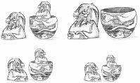

Chapter 11. Container Classes Container classes are general-purpose template classes that store items of a given type in memory. C++ already offers many containers as part of the Standard Template Library (STL), which is included in the Standard C++ library. Qt provides its own container classes, so for Qt programs we can use both the Qt and the STL containers. The main advantages of the Qt containers are that they behave the same on all platforms and that they are implicitly shared. Implicit sharing, or "copy on write", is an optimization that makes it possible to pass entire containers as values without any significant performance cost. The Qt containers also feature easy-to-use iterator classes inspired by Java, they can be streamed using QDataStream, and they usually result in less code in the executable than the corresponding STL containers. Finally, on some hardware platforms supported by Qtopia Core (the Qt version for mobile devices), the Qt containers are the only ones available. Qt offers both sequential containers such as QVector<T>, QLinkedList<T>, and QList<T>, and associative containers such as QMap<K, T> and QHash<K, T>. Conceptually, the sequential containers store items one after another, whereas the associative containers store keyvalue pairs. Qt also provides generic algorithms that perform operations on arbitrary containers. For example, the qSort() algorithm sorts a sequential container, and qBinaryFind() performs a binary search on a sorted sequential container. These algorithms are similar to those offered by the STL. If you are already familiar with the STL containers and have STL available on your target platforms, you might want to use them instead of, or in addition to, the Qt containers. For more information about the STL classes and functions, a good place to start is SGI's STL web site: http://www.sgi.com/tech/stl/. In this chapter, we will also look at QString, QByteArray, and QVariant, since they have a lot in common with containers. QString is a 16-bit Unicode string used throughout Qt's API. QByteArray is an array of 8-bit chars useful for storing raw binary data. QVariant is a type that can store most C++ and Qt value types. |